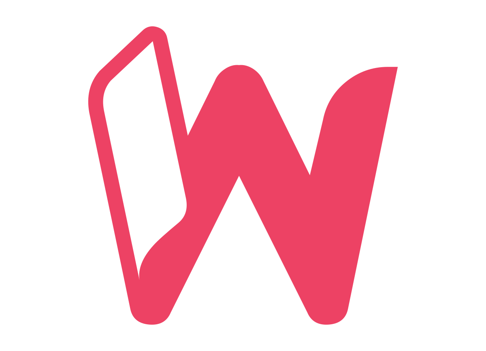

LinkedIn Ads · Field notes
What €1M on LinkedIn Ads taught us
12 lessons, in 4 pillars, on why LinkedIn charges you more than it should, and what to do about it.
v0.5 · Internal draft · Not for distribution
Wonderland Marketing · September 2026
For team review. Numbers are rounded and anonymised.
Wonderland · LinkedIn Ads field notesv0.5 draft
Why this exists
LinkedIn will spend every euro you give it. That isn't the same as reaching more people.
Most LinkedIn Ads advice is written by people who've managed a few thousand euros. This comes from managing more than a million, across several markets, funnel stages and most of the formats LinkedIn sells.
The pattern we kept running into: LinkedIn prices delivery very differently from Meta. It punishes small audiences, fragmented accounts and tired creative, and it does so quietly, by raising your CPM while your spend stays the same. The platform's own conversion numbers can hide the problem.
These are the 12 lessons that held up, grouped into 4 pillars.
Pillar 1
Audience size drives your costs
- 1A ("perfect") audience is too expensive to reach
- 2Your audience size sets your budget, not the other way round
- 3Audience size decides how long your ads last
- 4A CPM spike means your ad has run out of people
- 5More ad sets on the same audience means a higher price for all of them
Pillar 2
What LinkedIn is for
- 6LinkedIn is a reach channel, not a demo machine
- 7You don't need bottom-of-funnel ads on LinkedIn
Pillar 3
What earns attention in the feed
- 8People beat logos
- 9Document ads get 6x the clicks for a fifth of the price
Pillar 4
Work with the algorithm, not against it
- 10Every big change sends you back to the learning phase
- 11Don't bid for conversions on a campaign shorter than the learning phase
- 12LinkedIn's algorithm needs more signal than a small audience can give
2
Wonderland · LinkedIn Ads field notesv0.5 draft
1
Audience size drives your costs
These five lessons build on each other. Targeting decides how big your audience is. Audience size decides how much you can usefully spend and how long your creative lasts. A CPM spike is the alarm that tells you you've hit one of those limits.
- 01A ("perfect") audience is too expensive to reach
- 02Your audience size sets your budget, not the other way round
- 03Audience size decides how long your ads last
- 04A CPM spike means your ad has run out of people
- 05More ad sets on the same audience means a higher price for all of them
3
Pillar 1 · Audience size drives your costsv0.5 draft
01
A ("perfect") audience is too expensive to reach
Every targeting layer you add, such as an account list and job title and seniority and company size, shrinks the pool and raises the price of every impression in it. An account-list audience labelled "top of funnel" isn't prospecting. It's retargeting, and LinkedIn prices it that way.
The fix isn't Meta-style "go broad". Audience Expansion and the Audience Network both drift away from your buyer. The right audience is wide enough to deliver and tight enough to be relevant.
12x
Higher CPM on the same ads once an account list was layered on top of function + company-size targeting.
Watch for
- "Prospecting" audiences under a few tens of thousands of members
- Account lists combined with AND logic on titles and seniority
Do instead
- Target by job function + company size, then stop adding layers
- Use account lists to measure engagement, not to drive conversions
- Set a minimum size for anything you call prospecting
02
Your audience size sets your budget, not the other way round
Every audience has a limit on how much you can usefully spend on it. Past that limit, LinkedIn doesn't find you new people. Unless you're bid-capped, it keeps spending the full daily budget, shows your ads to fewer people and charges more for each impression.
From inside the account it looks like a healthy campaign: budget fully spent, CTR stable. The only signs are in delivery: impressions falling, CPM rising.
−85%
Impressions on a flat budget. CPM rose roughly 6x over the same month.
Watch for
- Spend flat, impressions down, CPM up
- CTR and form completion holding steady. The ad isn't the problem; the pool is used up.
Do instead
- Budget for a weekly frequency of about 3–4, then stop adding money
- Need to spend more? Widen the audience, don't raise the budget
- On a small audience, a campaign that doesn't spend its full budget is working as it should
4
Pillar 1 · Audience size drives your costsv0.5 draft
03
Audience size decides how long your ads last
Creative doesn't wear out on a fixed timetable; it wears out at the rate your audience sees it. A small list sees the same ad over and over, so it tires in days. A broad audience can keep an ad working for weeks.
The narrower you target, the more creative you need in the pipeline. Plan and budget for that before launch, not after the CPM has already gone up.
3 days
Until the best ad on a small account list stopped getting clicks. On broad audiences, ads lasted 4–6 weeks.
Watch for
- Frequency above ~3 per week
- The launch-day winner turning into the worst performer
Do instead
- Small lists: launch 8–10 variants, rotate every 5–7 days
- Broad audiences: review creative from week 4
04
A CPM spike means your ad has run out of people
Check CPM daily, at the level of each ad. When an ad's CPM jumps to 4x or more of its own baseline, it has exhausted its audience. LinkedIn cuts how often it shows the ad. Unless you're bid-capped, it still spends your full budget, which is what drives the CPM up.
CPM usually shows fatigue before CTR does. By the time CTR drops, you've already been overpaying for days.
4x+
CPM against the ad's own baseline. Pause or refresh the same day.
| CPM | Other signal | Most likely cause |
|---|
| Rising | CTR falling | Creative fatigue |
| Rising | CTR flat | Your own ad sets competing (see 05) |
| Rising | Frequency rising, impressions falling | Audience used up |
| High from day one | Frequency ~1 | Audience too small to reach |
5
Pillar 1 · Audience size drives your costsv0.5 draft
05
More ad sets on the same audience means a higher price for all of them
Ad sets that target the same people enter the same auction and push up each other's price. Ten ad sets at €10 a day, all aimed at one retargeting pool, cost more per impression than one ad set at €100 a day.
It builds up gradually. Every new offer, market version or test gets its own small ad set until the account is bidding against itself. The giveaway is CPM climbing while CTR stays flat: nothing is wrong with the ads.
~3x
CPM rise when dozens of small ad sets targeted one retargeting pool. CTR didn't move.
−45%
CPC within 10 days of consolidating the structure, with CTR +40%.
Watch for
- Many ad sets sitting at LinkedIn's daily minimum
- Near-identical market versions of the same ad splitting the budget
Do instead
- One campaign per audience per objective
- Fewer, properly funded ad sets with 5–6 ads each
- Split a campaign out only when its goal is genuinely different
Pillar 1 in one line
01 · Targetingsets how big your audience is.
02 · Sizesets how much you can usefully spend.
03 · Sizesets how long your creative lasts.
04 · CPMtells you, every day, when you've hit the limit.
6
Pillar 2 · What LinkedIn is forv0.5 draft
Pillar 2
What LinkedIn is for
06
LinkedIn is a reach channel, not a demo machine
Most of the conversions LinkedIn reports are view-through: someone saw an ad, didn't click, and converted later through another route. With long attribution windows, LinkedIn will credit campaigns that were paused, and ads nobody clicked.
Judge LinkedIn on its cost per demo and it will always look expensive. Judge it on its own conversion numbers and it will look far better than it really is. Neither tells you what it's actually doing: putting you in front of your buyers, again and again.
86–98%
Of reported conversions were view-through, not clicks.
~7x
The real cost per post-click conversion, compared with the CPA LinkedIn reported.
Watch for
- Paused campaigns still "converting"
- Dozens of tracked conversion events, from video views to downloads
Do instead
- Report post-click and view-through conversions separately
- Cut tracked conversion events to 2–3
- Measure reach and frequency within your ideal buyers, plus influence on pipeline
07
You don't need bottom-of-funnel ads on LinkedIn
This is where most teams go wrong: they expect to use LinkedIn the way they use Meta. They bid for conversions, push demo requests and target narrowly to "only pay for buyers". LinkedIn's delivery engine isn't built for that.
What works is a steady mix of evergreen content, like benchmarks, guides and tools people keep coming back to, and seasonal content that gives people a reason to care now, like regulation changes, planning cycles and industry moments. Show it to an audience of your ideal buyers that's wide enough to sustain it. Sales closes the demo; LinkedIn makes sure the buyer already knows your name.
70x+
More leads from a content offer than from a demo-request form, on the same lead gen setup.
Review noteBoldest claim in the piece. Add a line on where lead gen forms still fit (e.g. a small fixed share of budget for identifiable leads)?
7
Pillar 3 · What earns attention in the feedv0.5 draft
Pillar 3
What earns attention in the feed
08
People beat logos
LinkedIn is a feed of people. Ads run from real people's posts (LinkedIn calls them Thought Leader ads) look like the rest of the feed, and ads from a company page look like ads. The auction reflects that: higher engagement, cheaper delivery.
They also last longer. On a broad top-of-funnel audience, a strong post can keep working for months. But not forever: the older ones eventually showed the same CPM spike as everything else. Treat them like any other creative: watch the CPM and refresh.
~3x
The CTR of company page posts, at the lowest CPM of any format we ran.
Watch for
- The whole budget going to brand-page posts
- Thought Leader posts left running for months without anyone checking CPM
Do instead
- Build a small group of people whose posts you can put spend behind
- Promote posts that are already doing well organically
- Apply the 4x CPM rule (04) to these too
09
Document ads get 6x the clicks for a fifth of the price
A document ad is a swipeable PDF that plays inside the feed. The reader gets real value without leaving LinkedIn, every swipe counts as engagement, and the experience is better than a landing page. That lines up with what LinkedIn wants: people staying on the platform.
The result: far more engagement for the money. If your offer is a guide, a report or a checklist, show a preview in the feed instead of hiding it behind a click.
6x
The CTR of the same message as a single image, at about a fifth of the cost per click.
Review noteThe advantage is per click, not per impression. In one week we compared, document ad CPMs were higher than single images. We don't have evidence that LinkedIn prioritises the format, so the wording above says it "lines up with" what LinkedIn wants rather than claiming priority.
8
Pillar 4 · Work with the algorithm, not against itv0.5 draft
Pillar 4
Work with the algorithm, not against it
10
Every big change sends you back to the learning phase
Replace all your proven ads in one go, or move a large share of budget overnight, and the campaign starts learning again from scratch. Delivery drops, costs jump, and it can take one to two weeks to recover. Most teams read that dip as "the new creative doesn't work" and change something else, which resets it again.
20x+
CPC rise after proven ads were swapped out all at once.
Watch for
- A performance drop straight after a "refresh"
- Several changes made in the same week
Do instead
- Add new ads alongside your winners; retire the old ones gradually
- Move budget in steps of about 25%, a week apart
11
Don't bid for conversions on a campaign shorter than the learning phase
A five-day burst for an event, a launch or an account-based push ends before the algorithm has learnt who converts. You pay the price of conversion bidding and never get the benefit. For short bursts, use maximum delivery, reach or engagement, and let the timing and the message do the work.
12
LinkedIn's algorithm needs more signal than a small audience can give
This is the other half of "don't use LinkedIn like Meta". Meta's algorithm can take a broad audience and find the buyers inside it. LinkedIn's isn't that sophisticated. Given a small audience and a conversion goal, it doesn't find anyone new; it just bids up the price of the few people it has, and most of the "conversions" it records are view-through.
+75%
Higher CPM in smaller markets under conversion bidding, for a smaller share of conversions.
Review noteWe're currently testing whether optimising for website visits gets the same reach for less in these markets. Present it as a hypothesis until the results are in.
9
Internal · For team reviewv0.5 draft
Before v1.0
Open items for the team
This page comes out before publication.
- Headline figure. Confirm total managed LinkedIn spend and currency (€ or $), and the time period. The cover says "€1M" with no time period for now.
- Anonymisation. Check that no stat, market reference or offer type can be traced back to any client. All numbers are rounded ratios; no absolute amounts, dates or market names.
- More than one account. Most of the evidence comes from one large account. If we can show the same patterns in two or three other accounts, the "this holds up broadly" claim gets much stronger.
- Thought Leader ad lifespan (08). The evidence supports "longer, but not forever". We can't give a number of weeks.
- Document ads (09). The advantage is in CTR and CPC, not CPM. Keep the wording as it is.
- Pending tests. The website-visits objective test (12) and the brand lift study. Add results if they arrive before we publish.
- Visuals. Candidates: a daily CPM line showing an exhausted audience (02/04), a bar chart of CPM with and without the account list (01), and the diagnostic table (04) as a one-page cheat sheet.
- CTA. Final page, e.g. an offer of a LinkedIn account audit or CPM health check.
10